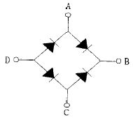
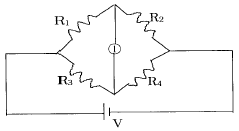

항로표지산업기사 (2002-12-08 기출문제)
1과목: 항로표지일반
1. 적절하고 유효한 항로표지 요건으로 구비하여야 할 사항으로 옳지 않은 것은?
- 일정한 장소에 항상 고정되어 있어야 하며, 정확히 운영될 것
- 국제적으로 간편하고, 누구나 식별하기 쉬울 것
- 평상시에는 항해자가 무시할 수 있고, 필요에 따라 즉시 이용할 수 있을 것
- 신뢰성이 낮고 항상 이용이 쉬울 것
(정답률: 알수없음)

2. 항로표지법 제 4조의 2에 해당하는 사설 항로표지 관리자가 될 수 있는 사람은?
- 미성년자
- 파산선고를 받은 자로서 복권된 자
- 형이 집행중인 자
- 금치산자
(정답률: 알수없음)
3. 항로표지법 시행규칙 제17조(검사대행기관의 휴지 또는 폐지 등)에 규정된 검사대행기관이 휴지 또는 폐지하고자 할 경우에는 휴지 또는 폐지하는 날의 30일전까지 해양수산부장관에게 휴지 또는 폐지 신고서를 제출하여야 한다. 이 경우 휴지기간은 몇 개월을 초과할 수 없는가?
- 3개월
- 6개월
- 9개월
- 12개월
(정답률: 알수없음)
4. 도등(Leading light)의 목적으로서 옳지 않은 것은?
- 분명하지 않은 가항수로의 표시
- 수로의 가장 깊은 곳의 수심 표시
- 항만 또는 강어구 등 안전하게 접근하기 어려운 곳에 표시
- 변침위치의 변침점에 표시
(정답률: 알수없음)
5. 부표설치 시 내해 또는 시계불량한 지역의 부표간의 평균 거리는?
- 0.5 마일 정도
- 1 마일 이내
- 2 마일 이내
- 3 마일 이내
(정답률: 알수없음)
6. 섬광기 또는 등명기 제어반에 연결하여 일광시간(주간)에 햇빛을 감지하여 광원의 전원공급을 차단하고, 밤에는 등 명기에 전원을 공급할 수 있도록 하는 장치는?
- 섬광기
- 전구교환기
- 일광제어기
- 항로표지용 전구
(정답률: 알수없음)
7. 현재 우리나라에서 사용하고 있는 해도에서 높이와 수심을 나타내는 단위는?
- mm
- ㎝
- ｍ
- ㎞
(정답률: 알수없음)
8. IALA 해상부표식의 종류 중 항해원조를 주 목적으로 하는 것이 아니고 수로도지에 기재된 구역이나 지물을 표시하는 것은?
- 측방표지
- 특수표지
- 방위표지
- 고립장애표지
(정답률: 알수없음)
9. 속력 10놋트의 선박이 선수방향에서 선미방향으로 2놋트의 조류를 받고 3시간동안 항행하였을 때 선박의 속력은?
- 대수속력 8놋트, 대지속력 10놋트
- 대수속력 10놋트, 대지속력 8놋트
- 대수속력 10놋트, 대지속력 12놋트
- 대수속력 8놋트, 대지속력 12놋트
(정답률: 알수없음)
10. IALA 해상부표식(B지역)에서 동방위 표지의 도색으로 옳은 것은?
- 상부흑색, 하부황색
- 흑색바탕에 황색횡대
- 황색바탕에 흑색횡대
- 상부황색, 하부흑색
(정답률: 알수없음)
11. 다음 중 현황변경에 속하지 않는 것은?
- 항로표지의 설치
- 항로표지의 위치변경
- 항로표지의 현상변경
- 항로표지의 폐지
(정답률: 알수없음)
12. 고립장애표지의 등질로 사용되는 것은?
- Fl W 5s
- Fl R 10s
- Fl R (2) 5s
- Fl W (2) 10s
(정답률: 알수없음)
13. 암초, 천소, 노출암 등의 위치를 표시하기 위하여 고정적으로 설치하는 항로표지는?
- 부표
- 등부표
- 도표
- 입표
(정답률: 알수없음)
14. 선박에서 항만의 소재를 표시하여 선박의 위치를 확정시키는데 필요한 항로표지는?
- 연안표지
- 육지초인표지
- 항만연안표지
- 항만인지표지
(정답률: 알수없음)
15. 지구상의 위치 요소 중 지구의 중심을 지나지 않는 평면으로 자를 때 생기는 원을 의미하는 것은?
- 거등권
- 자오선
- 항정선
- 소권
(정답률: 알수없음)
16. 북측 방위표지에 사용되는 등질은?
- 급섬광
- 단섬광
- 연속적인 급섬광 또는 초급섬광
- 군섬광
(정답률: 알수없음)
17. 항로표지종류 중 특수신호표지가 아닌 것은?
- 선박 통항 신호(VTS)표지
- 위성 항법 표지
- 기상 신호 표지
- 조류 신호 표지
(정답률: 알수없음)
18. 부표의 방향과 수원에 관한 사항으로 옳지 않은 것은?
- 선박이 바다로부터 항만이나 하천을 향하여 입항하는 경우 좌, 우현이라 함은 수원을 향하여 선박으로부터의 좌우를 말한다.
- 항만내에 있어서는 선박이 접안하는 방향을 수원으로 한다.
- 하천에 있어서 좌, 우안이라 함은 수원으로부터 하구를 향하여 좌우를 말한다.
- 수원의 방향이 혼동되는 곳에서는 ★: 기호를 해도상에 표시한다
(정답률: 알수없음)
19. 등대 및 등표의 설계 시 고려하여야 할 하중 및 외력의 종류가 아닌 것은?
- 자중
- 지진력
- 풍압력
- 지지력
(정답률: 알수없음)
20. 무인표지 종류 별 정비점검주기 중 등표의 점검 주기는?
- 15일에 1회 이상
- 1개월에 1회 이상
- 2개월에 1회 이상
- 3개월에 1회 이상
(정답률: 알수없음)
2과목: 전기, 전자기초
21. 납축전지에 충전을 하려면 직류 전원을 연결하여 충전을 하는데, 그 방식에 대한 올바른 설명은?
- 축전지와 직류 단자를 각각 같은 극성끼리 접속하여야 한다.
- 충전 방식에서 접속법 중 용량이 다른 여러 대의 축전지는 동시에 충전할 수 있는 방법은 없다.
- 접속법 중 용량이 같은 여러 대의 축전지를 동시에 충전하는 방식은 오직 직· 병렬 접속법 밖에 없다.
- 직류 전원으로만 직접 연결하여 충전할 수 있지 교류 전원은 어떠한 장치를 사용하더라도 충전이 불가능하다.
(정답률: 알수없음)
22. 역률각이 90° 늦을 때의 전기자 반작용은?
- 편자작용
- 증자작용
- 교차작용
- 감자작용
(정답률: 알수없음)
23. 무한히 긴 직선 도선에 I의 전류가 흐를 때 이 도선으로 부터 r만큼 떨어진 곳의 자장의 세기는?
- I 에 비례하고 r 에 반비례한다.
- I 에 반비례하고 r 에 비례한다.
- I 의 제곱에 비례하고 r 에 반비례한다.
- I 에 비례하고 r 의 제곱에 반비례한다.
(정답률: 알수없음)
24. 무부하일 때 자기 여자가 되지 못하는 직류 발전기는?
- 차동복권
- 분권
- 직권
- 타여자
(정답률: 알수없음)
25. 태양광 발전 시스템에 대한 올바른 설명은?
- 태양 전지를 이용한 발전 방식이다.
- 나오는 출력은 교류밖에 없는 발전 방식이다.
- 구름이 엷게 낀 날은 발전할 수 없는 발전 방식이다.
- 한 곳에 축열한 태양광의 에너지로 열기관을 이용한 발전 방식이다.
(정답률: 알수없음)
26. 2[Ω]의 저항 10개, 5[Ω]의 저항 3개가 있다. 이들을 모두 직렬로 접속할 때의 합성저항[Ω]은?
- 7
- 15
- 20
- 35
(정답률: 알수없음)
27. 태양 전지의 출력 단자를 단락시키면 무슨 현상이 일어나는가?
- 발열한다.
- 기전력이 0이 된다.
- 폭발한다.
- 아무변화 없다.
(정답률: 알수없음)
28. 보통 건전지에 사용되는 감극제는?
- 산화수은
- 이산화망간
- 공기
- 중크롬산
(정답률: 알수없음)
29. 직류발전기의 운전 중 계자회로를 급히 차단할 때 과전압 발생 방지를 위해서 설치해야 할 것은?
- 전압 조정기
- 계자 방전저항
- 자기 조정기
- 정전 용량
(정답률: 알수없음)
30. 3상 교류전력을 나타내는 식으로 옳은 것은?
- P=√2×선간전압×선전류×역률
- P=√2×상전압×상전류×역률
- P=√3×상전압×상전류×역률
- P=√3×선간전압×선전류×역률
(정답률: 알수없음)
31. 교류 발전기의 동기 임피던스는 철심이 포화하면?
- 감소한다.
- 증가한다.
- 관계없다.
- 증가, 감소가 불명
(정답률: 알수없음)
32. 반도체에 대한 설명 중 옳지 않은 것은?
- 저항률이 도체와 절연체의 중간범위에 있는 물질이다.
- 온도가 증가하면 저항치가 증가한다.
- 반도체 속에 극소량의 금속원자나 불순물이 혼합되어 있으면 전기저항에 큰 영향을 준다.
- 반도체는 열이나 빛 등을 받으면 특유한 현상을 나타낸다.
(정답률: 알수없음)
33. 2[kΩ]의 저항에 20[mA]의 전류를 흘리기 위한 전압은 몇 [V]인가?
- 10[V]
- 20[V]
- 30[V]
- 40[V]
(정답률: 알수없음)
34. 커패시터 20[㎌]과 30[㎌]이 직렬로 접속 되었을 때의 합성용량[㎌]은?
- 12
- 24
- 36
- 50
(정답률: 알수없음)
35. 절연 저항을 측정하는데 가장 적당한 계기는?
- 메거 테스터
- 전류계
- 더블 브릿지
- 휘스톤 브릿지
(정답률: 알수없음)
36. 다음 그림과 같은 정류 회로를 무엇이라고 하는가?

- 브리지 회로
- 반파 회로
- 단상 회로
- 다상 회로
(정답률: 알수없음)
37. 다이오드의 양단에 인가되는 전압에 의하여 다이오드가 가지는 정전용량이 변하는데, 이를 이용하여 다이오드를 하나의 커패시터로 사용하는 다이오드를 무엇이라 하는가?
- 제너 다이오드
- 가변용량 다이오드
- 쇼트키 다이오드
- 바리스터
(정답률: 알수없음)
38. 표준 전지의 양극 재료는?
- 수은
- 구리
- 백금
- 카드늄
(정답률: 알수없음)
39. 다음 회로 ⓛ에 전류가 흐르지 않도록 하기 위한 조건은?

- R1R4 = R2R3
- R1R4 > R2R3
- R1R4 < R2R3
- R1R4 - R2R3 = 1
(정답률: 알수없음)
40. 자동 판매기는 돈을 넣으면 일정량의 음료가 나온다. 이것은 무슨 제어인가?
- 시퀀스 제어
- 되먹임 제어
- 서보 제어
- 폐루프 제어
(정답률: 알수없음)
3과목: 광파, 음파 표지
41. 다음 중 등대의 설계요건으로서 틀린 것은?
- 항내의 등대는 주로 육지초인표지이다.
- 연안표지는 부근의 다른 등광과 식별하기 위해 등질을 다르게한다.
- 육지초인표지는 일반적으로 구조가 튼튼하고 광도가 강하다.
- 일반적으로 해양에 돌출한 곳, 섬 등에 설치한다.
(정답률: 알수없음)
42. 다음 중 호이겐스의 원리를 가장 잘 나타낸 것은?
- 굴절률이 다른 두 개의 투명한 매질속을 빛이 통과할 때 그 경계면에서 굴절된다.
- 빛이 진행하는 경로는 발광체와 관측자의 사이를 가장 빠른 시간내에 도달하게 만든다.
- 빛은 발광체의 운동에 따라 상대적으로 정지한 관측자에게 다른 파장의 빛으로 보인다.
- 빛이 전파할 때 어떤 순간의 파면에서의 모든 점은 다음 순간에 새로운 파동을 형성한다.
(정답률: 알수없음)
43. IALA해상부표식은 세계를 몇개의 지역으로 구분하여 서로 약간 다른 방식으로 정하고 있다. 우리나라는 어느 지역에 속하는가?
- A지역
- B지역
- C지역
- D지역
(정답률: 알수없음)
44. 야간표지의 일반적인 점등시간은?
- 일몰시부터 일출시까지이다.
- 현지시각으로 18시부터 06시까지이다.
- 현지시각으로 19시부터 07시까지이다.
- 각국마다 일출몰시각을 고려하여 정한다.
(정답률: 알수없음)
45. 항로표지의 빛, 색채, 형상 등이 보이게 하는 방법 중 잘못된 것은?
- 시간적 또는 거리적으로 발견이 용이할 것
- 가시거리내에서 눈에 띄기 쉬울 것
- 가시거리내에서 배경 또는 타 등화와 분별하기 쉬울 것
- 주위 배경색과 비슷할 것
(정답률: 알수없음)
46. 조류에 의한 부표의 경사각 계산시 고려사항으로 알맞지 않은 것은?
- 바람에 의한 경우와 같이 정적하중을 간주하여 계산한다.
- 보통 속도구배를 고려하지 않고 해수면상에서의 유속과 같은 유속을 사용한다.
- 조류에 의한 부표의 경사각을 결정하기 위해서 먼저 부표의 수면하부 부재에 작용하는 유속과 조류력, 조류력모멘트를 먼저 계산한다.
- 조류에 의한 부표의 최대 경사각은 조류력모멘트가 부표의 복원모멘트와 다를 때 발생한다.
(정답률: 알수없음)
47. 다음 중 등명암광의 약기는?
- Oc W 8s
- lso W 10s
- FI R 10s
- Q W
(정답률: 알수없음)
48. 음향신호에 관한 주의사항으로 잘못 기술된 것은?
- 기상과 지형에 따라 음향전달 상태가 다르다.
- 해상에 안개가 끼어도 무신호를 하지않는 경우가 있다.
- 무신호는 시계가 좋을 때도 행한다.
- 선내에서는 정숙하여 타선박의 무신호를 들어야한다.
(정답률: 알수없음)
49. 다음 중 등대 기초형식의 선정에 있어서 고려되지 않는 것은?
- 지반의 강도
- 등탑의 규모
- 외관의 모양
- 시공성
(정답률: 알수없음)
50. 부표의 일반적인 설치 기준으로 알맞지 않은 것은?
- 선박간의 충돌, 암초 또는 장애물에 승양 또는 좌초의 위험이 많은 곳의 장소에는 서로 기능에 장애가 없도록 기수를 더 설치할 수 있다.
- 항로상 좌· 우측한계선을 따라 설치하여야 할 부표간의 평균거리는 외해시 1마일 이내, 준외해시 0.5마일 내외 정도이다.
- 부표의 배치선은 가능한 한 직선이거나 완만한 곡선이어야 한다.
- 수로상 변침점에는 만곡부의 내측 법선에 설표하여야 한다.
(정답률: 알수없음)
51. 해도상에 Fl(2)W 6s 69m(16)M Racon으로 항로표지가 표시되어 있을 경우 이를 잘못 해석한 것은?
- 6초의 주기로 섬광등이 2차례 점등한다.
- 등고는 69m이다.
- 광달거리는 16마일이다.
- 등색은 홍색이다.
(정답률: 알수없음)
52. 빛에 대한 설명 중 잘못된 것은 어느 것인가?
- 빛은 똑같은 매질에서는 직진한다.
- 빛은 다른 매질의 경계에 도달하면 일부는 반사되고 나머지는 굴절하여 다른 매질 속으로 진행한다.
- 빛은 파장에 따라 굴절률이 다르다.
- 빛은 매질의 온도와 압력에 상관없이 굴절률이 일정하다.
(정답률: 알수없음)
53. 항로표지 등화의 등색으로 사용되지 않은 색은?
- 백색
- 황색
- 적색
- 청색
(정답률: 알수없음)
54. 다음 중 안개· 호우등 시계가 불량한 날에 가장 많이 이용되는 항로표지는?
- 광파표지
- 음파표지
- 형상표지
- 전파표지
(정답률: 알수없음)
55. 다음 중 등대 및 등표설계시 고려할 하중과 외력에 대한 설명중 틀린 것은?
- 자중,지진력,풍압력 및 파의 타상력이 계산에 고려되어야 한다.
- 파도의 영향을 받지 않는 등대는 지진력만 검토한다.
- 지진력은 등탑자중에 수평진도를 곱하여 계산한다.
- 풍압력은 속도압에 풍력계수를 곱한 것으로써 압력을 받는 면에 균일하게 분포되어 작용하는 것으로 한다.
(정답률: 알수없음)
56. 부표의 구조상 가장 문제가 되는 곳이 아닌 것은?
- 계류고리
- 인양고리
- 철탑과 부체와의 연결부
- 철판과 번호판 연결부
(정답률: 알수없음)
57. 진공중의 빛의 속도를 C, 어떤 매질의 굴절률을 n이라고 할 때, 그 매질 내를 통과하는 빛의 속도를 바르게 표현 한 것은?
- nC
- n2 C
- C/n
- C/n2
(정답률: 알수없음)
58. 다음 중 일반적으로 광파의 투과율이 가장 높은 필터는?
- 적색 유리 필터
- 녹색 플라스틱 필터
- 황색 유리 필터
- 청색 플라스틱 필터
(정답률: 알수없음)
59. 광파표지의 대표적인 것으로서 해양에 돌출한 곳, 섬 등 선박의 목표가 되는 위치를 선정하여 건설되는 광파표지는 무엇인가?
- 등대
- 조사등
- 교량등
- 도등
(정답률: 알수없음)
60. 다음 중 광파표지에 포함되지 않는 것은?
- 등대, 등표
- 도등, 조사등
- 지향등, 등주
- 등부표, 입표
(정답률: 알수없음)
4과목: 전파표지 및 시스템 이용
61. 다음중 선박으로부터 의뢰를 받아 그 선박의 발신전파의 방향을 측정해서 전파의 방위를 다시 알려주는 무선국은 무엇인가?
- 무선방향탐지국
- 무지향성 무선표지국
- 지향성 회전식 무선표지국
- 지향성 무선표지국
(정답률: 알수없음)
62. 다음 중 고정물표에 설치된 레이콘(Racon)으로부터 얻을 수 있는 정보와 관계가 가장 먼 것은?
- 본선의 속력
- 본선의 흘수
- 본선의 위치
- 물표의 식별정보
(정답률: 알수없음)
63. 2다음 전파에 대한 설명 중 잘못된 것은?
- 전파는 균일한 매질 내에서는 일정한 속도로 직진한다.
- 전파는 진행 중에도 주파수가 일정히 유지된다.
- 진공 속에서의 전파의 속도는 음속과 같다.
- 전파는 성질이 다른 매질의 경계면에서 일부가 반사되며, 투과한 전파는 굴절한다.
(정답률: 알수없음)
64. 중파무선표지의 방위 측정에 가장 큰 영향을 주는 해안선 효과로서 전파경로와 해안선이 이루는 각도가 몇 도 이하이면 방위 측정 시 주의가 요구되는가?
- 20°이하
- 40°이하
- 50°이하
- 60°이하
(정답률: 알수없음)
65. 우리나라는 전 해역을 몇 개의 구역으로 나누어 각 영역을 이중으로 커버할 수 있는 DGPS 시스템을 운영하고 있다. 2002년 12월 말까지 설치된 DGPS 기준국의 수는 몇 개인가?
- 8개
- 9개
- 10개
- 11개
(정답률: 알수없음)
66. 프로펠러형 풍력발전 시스템의 구성요소가 아닌 것은?
- 전달계
- 상용전원부
- 전기계
- 제어계
(정답률: 알수없음)
67. GPS는 몇 개의 위성으로 구성되어 있는가?
- 10개의 위성과 3개의 예비위성
- 12개의 위성과 1개의 예비위성
- 21개의 위성과 3개의 예비위성
- 12개의 위성과 3개의 예비위성
(정답률: 알수없음)
68. 선박통항신호소(VTS)에서 취하는 서비스 중에 통항선박의 항법위반의 범주로 볼 수 없는 것은?
- 정해진 항로를 이탈하여 항해하는 경우
- 정해진 항법을 위반하여 항해하는 경우
- 예견되는 위험에 아무 조치를 취하지 않는 경우
- 주기관 성능저하로 설계 속력으로 항해하지 못하는 경우
(정답률: 알수없음)
69. LORAN-C의 기선상에서 1 ㎲의 오차는 몇 m의 위치선 오차를 가져오는가?
- 135 m
- 145 m
- 155 m
- 200 m
(정답률: 알수없음)
70. GPS 운용 위성의 궤도 반경은?
- 약 25,500km
- 약 26,500km
- 약 27,500km
- 약 28,500km
(정답률: 알수없음)
71. 다음중 Micro파 무선표지에 해당되지 않는 것은?
- Loran-C
- Radar 반사기
- Talking Beacon
- Shodarvision
(정답률: 알수없음)
72. 로란C는 이용 가능한 유효범위가 800해리에 달하는 중장거리 전파표지이다. 이 표지의 2DRMS(95%)에서의 지리적 정밀도의 조건으로서 맞는 것은?
- 약 1해리
- 약 1/2해리
- 약 1/4해리
- 약 1/8해리
(정답률: 알수없음)
73. 3-4국의 송신국이 한조로서 체인을 구성하고, 주국 및 각 종국은 서로 다른 주파수의 지속파를 발사하며, 이용자는 수신한 전파의 위상비교에 의해 위치정보를 얻도록 하는 전파표지로서 맞는 것은?
- 로란 A
- 오메가
- 데카
- 로란 C
(정답률: 알수없음)
74. 미국의 GPS에서 안보를 위하여 고의로 정밀도를 떨어뜨리는 역할을 하는 기능으로 올바른 것은?
- AS(Anti Spoofing)
- SA(Selective Availability)
- PPS(Precise Positioning Service)
- SPS(Standard Positioning Service)
(정답률: 알수없음)
75. 마이크로파를 선박용 레이더에 쓰는 이유가 아닌 것은?
- 회절현상이 적고 직진성이 좋다.
- 반사파가 약하다.
- 지향성이 좋은 비임을 만들 수 있다.
- 혼신이 적다.
(정답률: 알수없음)
76. 선박의 레이더에서 발사된 전파를 수신하면, 같은 주파수대의 비콘 신호를 발사하여 레이더 화면에 모스 부호로 위치를 나타내는 전파표지를 무엇이라고 하는가?
- 레이마크비컨
- 레이더비컨
- 코스비컨
- 로타리비컨
(정답률: 알수없음)
77. 잡음방해에 대한 개선책으로 적절하지 않은 것은?
- 안테나에 노치 필터(Notch Filter)를 설치한다.
- 수신기의 실효대역폭을 가능한 좁게 설계한다.
- 안테나의 지향성을 예민하게 하여 이득을 높힌다.
- 송신 전력을 약간 저하시킨다.
(정답률: 알수없음)
78. LORAN-C 신호의 오차의 요인으로 틀린 것은?
- 주국과 종국 펄스 발사의 동기 오차
- 지상파 전파 전달 오차
- 주국과 종국의 기선(Baseline) 거리오차
- 공간파 오차
(정답률: 알수없음)
79. 다음 중 접지저항이 가장 작은 접지방식은?
- 심굴접지
- 방사성접지
- 카운터포이즈
- 다중접지
(정답률: 알수없음)
80. 로란C의 점유주파수 대역폭의 허용치는 20㎑이다. 허용된 점유주파수대를 측정하기 위하여 사용하는 계측장비로서 가장 적당한 것은?
- 와트메타
- 주파수카운터
- 오실로스코프
- 스팩트럼 어날라이저
(정답률: 알수없음)